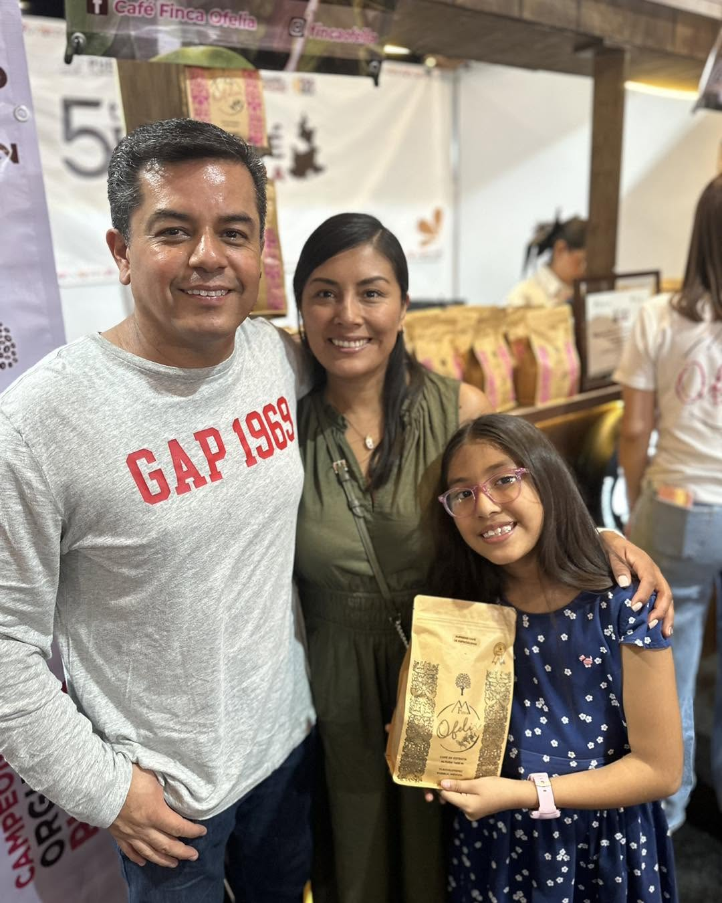
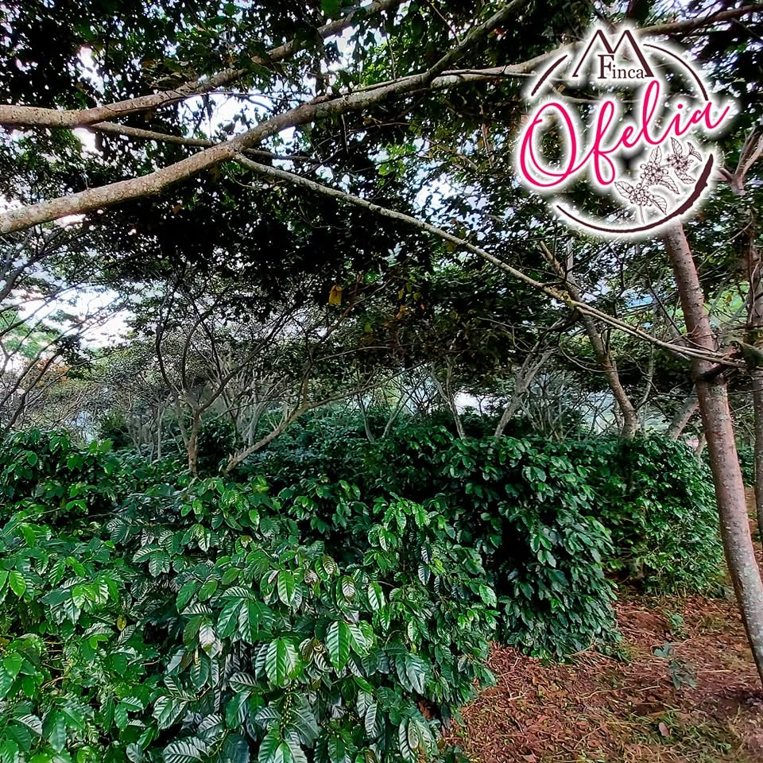
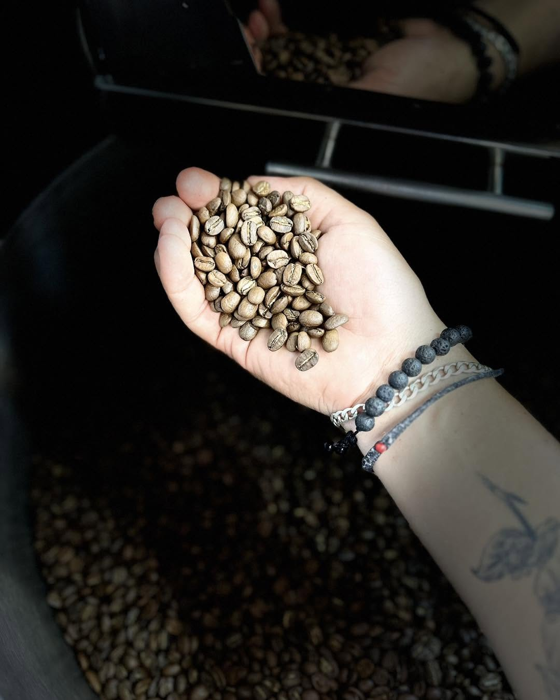
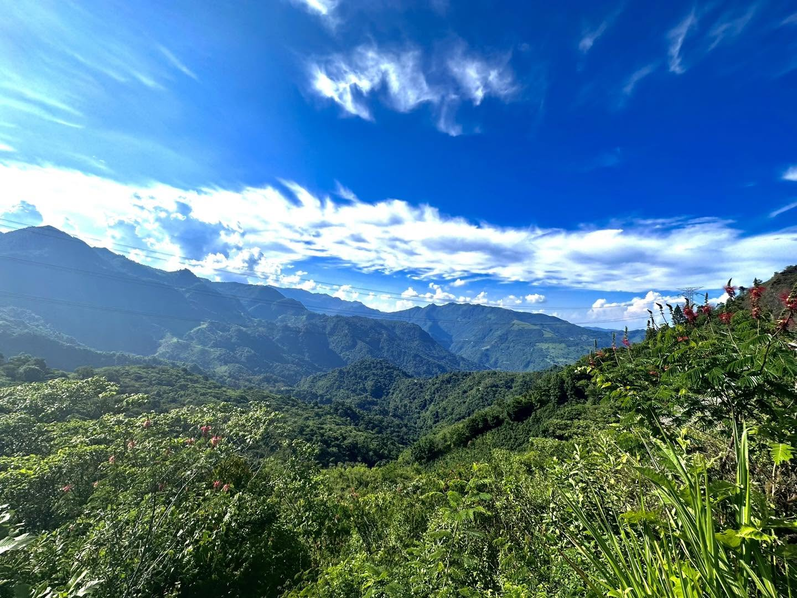
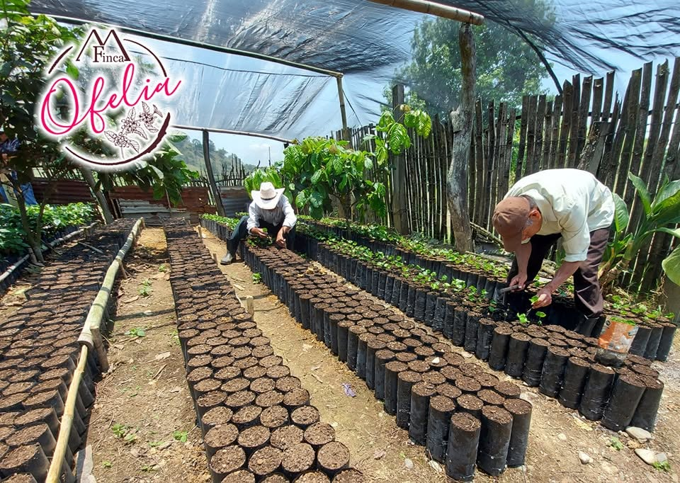
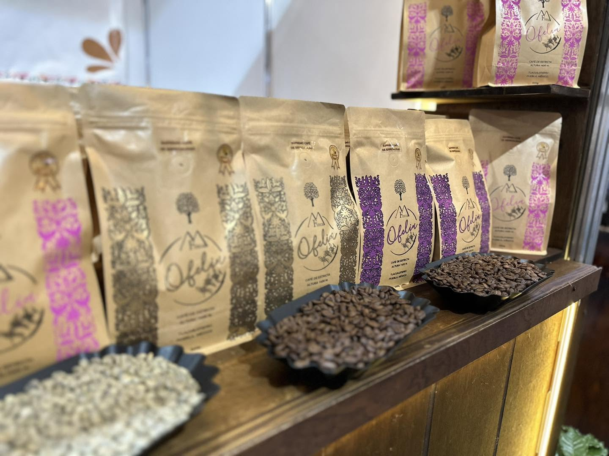

Comercio Justo
Garantizamos pagos dignos a los recolectores de la región, fomentando una economía circular que beneficia a decenas de familias locales.

Sustentabilidad
Nuestros métodos de cultivo protegen la flora y fauna de la región, utilizando fertilizantes orgánicos y cuidando los mantos acuíferos.

Calidad Premium
Cada grano de la Reserva de Don Marco es inspeccionado cuidadosamente para asegurar una taza limpia, dulce y con cuerpo excepcional.
El sueño de Don Marco. Raíces profundas.
Finca Ofelia nació no solo como una empresa agrícola, sino como un proyecto para revitalizar las tierras olvidadas. Con esfuerzo y pasión, Don Marco transformó parcelas áridas en un paraíso fértil, demostrando que el campo aún tiene mucho que dar.

Nuestras familias caficultoras. Crecemos juntos.
Para nosotros, el verdadero valor del café está en las manos que lo cultivan. Trabajamos día a día para brindar estabilidad y oportunidades de crecimiento a nuestras familias caficultoras, convirtiendo el esfuerzo en la finca en un verdadero motor de prosperidad.

El proceso artesanal. Del campo a tu hogar.
Evitamos la maquinaria industrial invasiva. Nuestro tostado se realiza en lotes pequeños para monitorear la curva de temperatura exacta. El resultado es un producto ético, lleno de amor y con un perfil de sabor que cuenta la historia de nuestra tierra.
